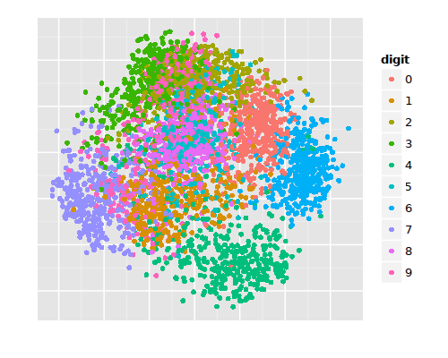
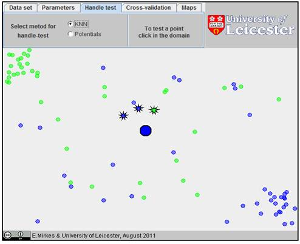

k-nearest neighbor classification
Suppose we measure some properties of flowers, species of iris to be precise. But this time, we also know their true “labels” (species). We have a table like the following:
| Sepal length (cm) | Sepal width (cm) | Petal length (cm) | Petal width (cm) | Species |
|---|---|---|---|---|
| 5.1 | 3.5 | 1.4 | 0.2 | iris setosa |
| 4.9 | 3.0 | 1.4 | 0.2 | iris setosa |
| 4.7 | 3.2 | 1.3 | 0.2 | iris setosa |
| … | … | … | … | |
| 7.0 | 3.2 | 4.7 | 1.4 | iris versicolor |
| … | … | … | … | … |
| 6.3 | 3.3 | 6.0 | 2.5 | iris virginica |
| … | … | … | … | … |
Since we know the true labels, we do not need to use k-means clustering to find (approximate) the species clusters.
If we get a new set of measurements from a new plant, we can predict (approximate, guess) which species it is by calculating the mean of each species cluster and finding which mean is closest.
However, instead of calculating means we typically use a different approach. (Perhaps the two approaches are equivalent; I am not sure.)
Given a new set of measurements, perform the following test:
- Find (using Euclidean distance, for example), the \(k\) nearest entities from the training set. These entities have known labels. The choice of \(k\) is left to us.
- Among these \(k\) entities, which label is most common? That is the label for the unknown entity.
What we have is a voting mechanism, where the most votes wins. Sometimes it is a good idea to give each vote a weight, such as the inverse of the entity’s distant from the unknown entity (so more distance votes count for less).
Choosing k
The article “Choosing \(k\) for two-class nearest neighbour classifiers with unbalanced classes“ by Hand and Vinciotti provides more information and solutions for choosing \(k\) when performing two-class assignment (i.e., Yes/No assignments) when one class is substantially larger than the other. They write in their conclusion,
Nearest neighbour supervised classification methods have many attractive properties. However, many of these are based on asymptotic arguments. In problems where the classification threshold lies near 0 or 1, as generally is the case in situations where one class is much larger than the other, the fact that \(k\) is finite results in a non-monotonic relationship between the proportion of each class correctly classified as \(k\) varies. This means that, in general, larger \(k\) may not yield better performance than smaller \(k\).
An example of how the choice of \(k\) affects performance may be found in the document classification notes.
Handwritten digit recognition
Consider the following dataset, available from UCI. Thirty people wrote 3823 digits (0-9), which were then scanned as images and translated into 64 features. Specifically, each digit was scanned into a 32x32 pixel black-and-white image, which was divided into 4x4 pixel blocks (64 of them); the number of black pixels in each 4x4 block was counted. These counts constitute the 64 features.
The plot below shows each of the 3823 entities in the testing set. Because the feature vector of each entity has 64 dimensions, we cannot simply plot the feature vectors themselves. Instead, I reduced the dimensionality to 2D using “multidimensional scaling.” This technique calculates the distance from each entity to each other entity, creating a 3823x3823 matrix of distances. Then these distances are reduced to two dimensions by finding an x,y pair for each entity that respects its distances to the other entities. The scaling is not perfect, but generally serves as a good approximation of how “different” each entity is from each other entity.

We see that each digit generally forms a cluster, although there is some overlap. The overlap may well be an artifact of the multidimensional scaling; perhaps there is no overlap if the data were to be graphed in more dimensions.
The k-nearest neighbor algorithm can be visualized using this plot. Say we get a new image, and we want our software to figure out which digit it is. We find the \(k\) nearest examples from the training set, and figure out what is the most common digit among those examples. Looking at the plot, we can imagine that if the new entity would be placed in the bottom-middle area, that most of its nearest neighbors would be green, representing the digit 4.
In fact, tests with this dataset have shown that the following \(k\) values produce the corresponding recognition accuracies:
| k value | accuracy |
|---|---|
| 1 | 98.00 |
| 2 | 97.38 |
| 3 | 97.83 |
| 4 | 97.61 |
| 5 | 97.89 |
| 6 | 97.77 |
| 7 | 97.66 |
| … | … |
These are rather high accuracies for such a simple algorithm.
How to handle noise
Some of the labeled training examples may be surround by the examples from the other classes. Such a situation may arise by plenty of reasons: (i) as a resut of a random mistake, (ii) because insufficient number of traning example of this class (an isolated example appears instead of cluster), (iii) because incomplete system of features (the classes are separated in other dimensions which we do not know), (iv) because there are too many training examples of other classes (unbalanced classes) that create too dense “hostile” background for the given small class and many other reasons. (source)
We can handle outliers by just removing them from the dataset. They won’t contribute any useful information for classification. Outliers can be detected by defining two values \(q \geq r > 0\) and say that a point is an outlier with respect to some class if, among its \(q\) nearest neighbors, there are more than \(r\) examples from other classes.
Applet
From http://www.math.le.ac.uk/people/ag153/homepage/KNN/KNNexcercise.htm (and corresponding applet)
Example exercise
Ensure that the parameters are at default settings
- Create a class with green colour by clicking at the top left corner of the work desk and also click on random to create some outliers
- Create a second class with blue colour by clicking at the bottom right corner of the work desk and also click on random to create some outliers
- Test a query example at the centre. (Hint: click on handle test menu, ensure the method is KNN and click at the centre of the work desk. Example screen shot is shown below)

- Classify the test query using different values of \(k\) = 3, 5, 10 and 20. (To change \(k\), Go to Parameter menu, change the Number of Nearest Neighbour, click Handle test Menu and click the point you want to classify, i.e., center of the work desk)
- Does varying the value of \(k\) affect the classification and which \(k\) gives a better classification?
- Calculate the map at the various \(k\). What can you observe?
Remarks
What is the inductive bias of k-nearest neighbor? The inductive bias corresponds to an assumption that the classification of an instance \(x\), will be most similar to the classification of other instances that are nearby in Euclidean distance.
One practical issue in applying k-nearest neighbor algorithms is that the distance between instances is calculated based on all attributes of the instance (i.e., on all axes in the Euclidean space containing the instances). This lies in contrast to methods such as rule and decision tree learning systems that select only a subset of the instance attributes when forming the hypothesis. To see the effect of this policy, consider applying k-nearest neighbor to a problem in which each instance is described by 20 attributes, but where only 2 of these attributes are relevant to determining the classification for the particular target function. In this case, instances that have identical values for the 2 relevant attributes may nevertheless be distant from one another in the 20-dimensional instance space. As a result, the similarity metric used by k-nearest neighbor — depending on all 20 attributes-will be misleading. The distance between neighbors will be dominated by the large number of irrelevant attributes. This difficulty, which arises when many irrelevant attributes are present, is sometimes referred to as the curse of dimensionality. Nearest-neighbor approaches are especially sensitive to this problem.
[…]
One additional practical issue in applying k-nearest neighbor is efficient memory indexing. Because this algorithm delays all processing until a new query is received, significant computation can be required to process each new query. Various methods have been developed for indexing the stored training examples so that the nearest neighbors can be identified more efficiently at some additional cost in memory. One such indexing method is the \(kd\)-tree, in which instances are stored at the leaves of a tree, with nearby instances stored at the same or nearby nodes. The internal nodes of the tree sort the new query \(x_q\), to the relevant leaf by testing selected attributes of \(x_q\).
— Machine Learning by Tom Mitchell, page 234.